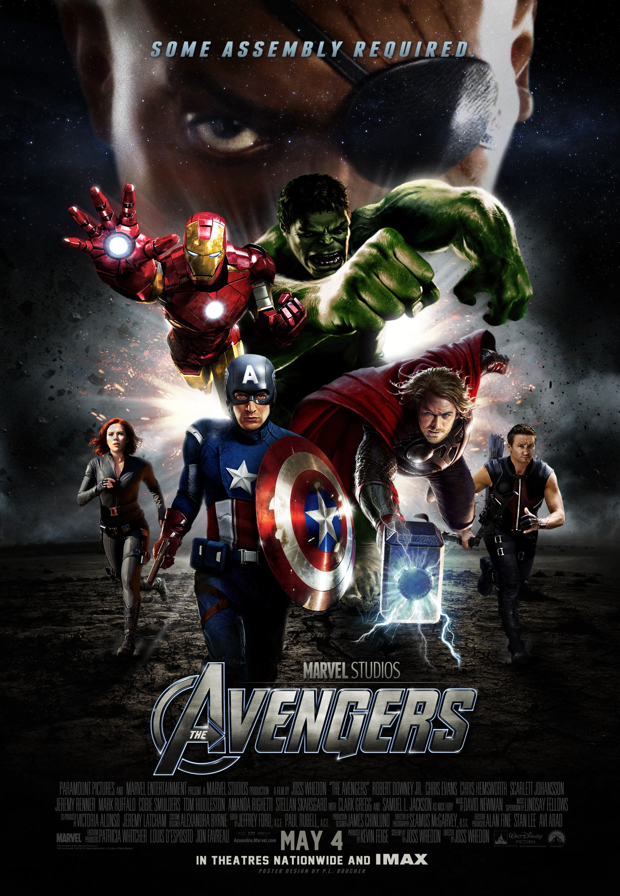

Featured This Week
The Avengers

Certified Fresh
Review by Roger Ebert
One of the weapons Marvel used in its climb to comic-book dominance was a willingness to invent new characters at a dizzying speed. There are so many Marvel universes, indeed, that some superheroes do not even exist in one another's worlds, preventing gridlock. The Avengers however do share the same time and space continuum, although in recent years, they've been treated in separate, single-superhero movies. One assumes the idle Avengers follow the exploits of the employed ones on the news.
"The Avengers," much awaited by Marvel comics fans, assembles all of the Avengers in one film: Iron Man, Captain America, Thor, the Hulk, the Black Widow and Hawkeye. This is like an all-star game, or the chef's sampling menu at a fancy restaurant. What always strikes me is how different their superpowers are. Iron Man (Robert Downey) is just an ordinary guy until he's wearing his super-suit. Thor (Chris Hemsworth) swings a mighty hammer. Hawkeye (Jeremy Renner) wields a bow with arrows so powerful they can bring down alien spacecraft. The Hulk (Mark Ruffalo) is a mild-mannered guy until he gets angry, and then he expands into a leaping, bounding green muscle man who can rip apart pretty much anything. Captain America (Chris Evans) has a powerful and versatile shield. Then there's Natasha (Scarlett Johansson), aka the Black Widow. After seeing the film, I discussed her with movie critics from Brazil and India, and we were unable to come up with a satisfactory explanation for her superpowers; it seems she is merely a martial artist with good aim with weapons. We decided maybe she and Hawkeye aren't te... (Click to read more)
"The Avengers," much awaited by Marvel comics fans, assembles all of the Avengers in one film: Iron Man, Captain America, Thor, the Hulk, the Black Widow and Hawkeye. This is like an all-star game, or the chef's sampling menu at a fancy restaurant. What always strikes me is how different their superpowers are. Iron Man (Robert Downey) is just an ordinary guy until he's wearing his super-suit. Thor (Chris Hemsworth) swings a mighty hammer. Hawkeye (Jeremy Renner) wields a bow with arrows so powerful they can bring down alien spacecraft. The Hulk (Mark Ruffalo) is a mild-mannered guy until he gets angry, and then he expands into a leaping, bounding green muscle man who can rip apart pretty much anything. Captain America (Chris Evans) has a powerful and versatile shield. Then there's Natasha (Scarlett Johansson), aka the Black Widow. After seeing the film, I discussed her with movie critics from Brazil and India, and we were unable to come up with a satisfactory explanation for her superpowers; it seems she is merely a martial artist with good aim with weapons. We decided maybe she and Hawkeye aren't te... (Click to read more)